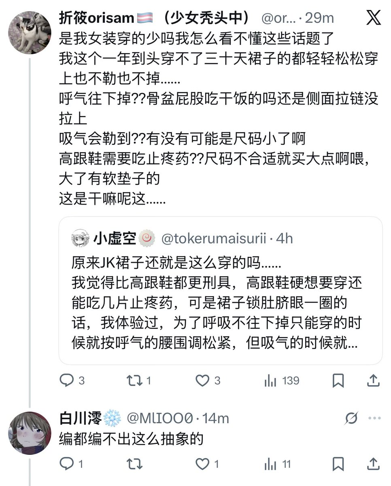

小虚空🍥
@tokerumaisurii
可惜中文动词性的骂人好像只有操人妈，创新一点也只是操人爹，我实在想不到有什么不委屈到（可能）无辜人士的骂法，我真的骂都骂不出来了。

小虚空🍥
@tokerumaisurii
已经是2025年的年末了，我在网上抱怨一句自己穿衣服遇到的不适和窘境，还要被卫道士拿出来一顿鞭策，甚至说我是编的。
我都不奢求你们有实际建议或者同情下个人差了；你们就算直球辱骂我skill issue或者身材太烂体态太扭曲我都认了。
结果说我编都编不出这么抽象的，我会真的很崩溃。你们，全是烂人。 https://t.co/Cn0Yjk7xug